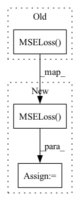

Pattern ID :14290
Before Change
self.costs.append(self._compute_error)
if cost == "mse":
self.costs.append(nn.MSELoss() )
if cost == "l1":
self.costs.append(nn.L1Loss())After Change
self.cost = self._compute_error
if cost_type == "mse":
self.cost = nn.MSELoss(reduction="none")
if cost_type == "l1":
self.cost = nn.L1Loss(reduction="none")
In pattern: SUPERPATTERN
Frequency: 3
Non-data size: 3
Instances Fragment ID: 47363254
Project Name: speechbrain/speechbrain
Commit Name: b002e025c22fbe7334b5aa3e475aa21a5cffdc01
Time: 2020-05-12
Author: mirco.ravabelli@gmail.com
File Name: speechbrain/nnet/losses.py
M Class Name: ComputeCost
N Class Name: ComputeCost
M Method Name: __init__(4)
N Method Name: __init__(5)
M Parent Class: nn.Module
N Parent Class: nn.Module
M File Name: speechbrain/nnet/losses.py
N File Name: speechbrain/nnet/losses.py
M Start Line: 57
M End Line: 92
N Start Line: 57
N End Line: 79
Before Change
Tuple of tensors
return (nn.MSELoss(**kwargs) (inputs, targets),)
def _adaptive_record_metrics(self, key: str, metrics: float):
if key in self.losses:After Change
if zero_grad:
self.optimizer.zero_grad()
loss = nn.MSELoss(**kwargs) (inputs, targets)
if backward:
loss.backward() Fragment ID: 47363253
Project Name: royerlab/cytoself
Commit Name: fdc5c3f9d381e9a5d2ec581c1006e403ff86b365
Time: 2022-08-18
Author: liamiiliil@gmail.com
File Name: cytoself/trainer/basetrainer.py
M Class Name: BaseTrainer
N Class Name: BaseTrainer
M Method Name: calc_loss_one_batch(6)
N Method Name: calc_loss_one_batch(3)
M Parent Class:
N Parent Class:
M File Name: cytoself/trainer/basetrainer.py
N File Name: cytoself/trainer/basetrainer.py
M Start Line: 78
M End Line: 96
N Start Line: 73
N End Line: 115
Before Change
global fft
for i in range(predictions.shape[0]):
fft = torch.nn.MSELoss( torch.fft.fft(predictions[i]), torch.fft.fft(targets[i]))
return fft
def Neg_Pearson_Loss(predictions, targets):After Change
rst = 0
for i in range(predictions.shape[0]):
rst += torch.nn.MSELoss( torch.fft.fft(predictions[i]), torch.fft.fft(targets[i]))
rst /= predictions.shape[0]
return rst
Fragment ID: 47363256
Project Name: tvs-ai/pytorch_rppgs
Commit Name: 2708e40e35c17bccd951e34114413713b244fdc1
Time: 2022-09-19
Author: forownsake@gmail.com
File Name: nets/loss/loss.py
M Class Name: AnonimousClass
N Class Name: AnonimousClass
M Method Name: fft_Loss(2)
N Method Name: fft_Loss(2)
M Parent Class:
N Parent Class:
M File Name: nets/loss/loss.py
N File Name: nets/loss/loss.py
M Start Line: 22
M End Line: 26
N Start Line: 38
N End Line: 46